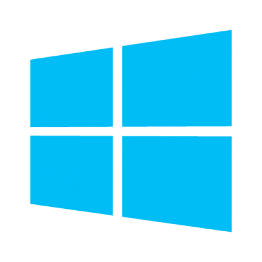

Sistema Operacional

Agora vamos abordar o tema de sistemas operacionais, compreendendo o que são e quais são suas principais funcionalidades. Também exploraremos o Windows 10, entendendo algumas de suas características e funcionalidades mais importantes, de forma a nos familiarizarmos com o sistema.
O sistema operacional também conhecido como SO é o software fundamental que gerencia o hardware e os recursos de um computador. Ele atua como uma ponte entre o usuário e o hardware, controlando tarefas como execução de programas, gerenciamento de arquivos, memória, dispositivos de entrada/saída e segurança. Em resumo, o SO organiza e coordena o funcionamento de todo o sistema, facilitando a interação entre o usuário e a máquina.
Principais sistemas operacionais
Windows
Desenvolvido pela Microsoft, é o sistema operacional mais popular em PCs. Tem várias versões, sendo o Windows 10 e Windows 11 as mais recentes. É amplamente utilizado tanto para uso pessoal quanto empresarial.
MacOS
Criado pela Apple, é o sistema operacional exclusivo para computadores Mac. É conhecido por sua interface elegante e integração com outros dispositivos Apple.

Linux
Um sistema operacional de *Código aberto, popular entre desenvolvedores e
entusiastas de tecnologia. Existem diversas distribuições de Linux, como Ubuntu, Fedora, e Debian,
cada uma com suas particularidades.
*Código aberto (ou open source) é um tipo de software cujo código-fonte é
disponibilizado para que qualquer pessoa possa visualizar, modificar e distribuir.

Android
O sistema operacional mais utilizado globalmente, desenvolvido pelo Google. É open source e oferece grande flexibilidade e personalização. É utilizado em diversas marcas de smartphones.

IOS
O sistema operacional móvel da Apple, exclusivo para iPhones. É conhecido por sua segurança, desempenho estável e integração com outros dispositivos Apple.

Windows 10
Atualmente, o Windows 10 é a versão mais utilizada do sistema operacional, com cerca de 70% de participação no mercado global de desktops. Sua dominância se deve à ampla compatibilidade com uma variedade de dispositivos e softwares. Por esse motivo, o Windows 10 foi escolhido para este guia. Agora, vamos explorar algumas de suas principais ferramentas e funcionalidades.
Fonte: StatCounter Global Stats - Windows Version Market Share
Área de Trabalho
A área de trabalho do Windows, também conhecida como desktop, é a interface principal que os usuários veem ao iniciar o sistema operacional. Aqui estão alguns dos elementos mais importantes da área de trabalho do Windows:
- Fundo de Tela: A área de trabalho é geralmente coberta por uma imagem de fundo, que pode ser personalizada pelo usuário.
- Barra de Tarefas: Localizada na parte inferior da tela, a barra de tarefas exibe ícones de programas abertos, além de fornecer acesso rápido ao menu Iniciar, à pesquisa do Windows, e a outras funcionalidades, como a Central de Ações e o relógio.
- Ícones: Na área de trabalho, é possível encontrar ícones que representam arquivos, pastas e programas. Os usuários podem acessar rapidamente esses itens clicando duas vezes sobre os ícones.
Barra de Tarefas
A barra de tarefas do Windows é uma das principais características da interface do sistema operacional, localizada geralmente na parte inferior da tela.Nela você pode encontrar os seguintes elementos:
- Botão Iniciar: Acesso ao Menu Iniciar, onde você pode encontrar aplicativos, configurações e opções de desligamento.
- Área de Pesquisa: Campo de pesquisa para localizar aplicativos, arquivos e informações na web.
- Ícones de Aplicativos Fixados: Ícones de programas que você utiliza frequentemente,
permitindo acesso rápido.
Ícones de Aplicativos Abertos: Representações dos aplicativos atualmente em execução, permitindo fácil alternância entre eles. - Área de Notificação: Ícones de aplicativos em segundo plano, além de informações sobre a rede, volume, bateria e relógio.
- Central de Ações: Um botão que fornece acesso rápido a configurações e notificações do sistema.
Menu Iniciar
Ao clicar no botão Iniciar, o usuário acessa o Menu Iniciar uma das principais interfaces do sistema operacional, projetada para facilitar o acesso a aplicativos, configurações e recursos do sistema.Aqui estão algumas das suas principais funcionalidades:
- Lista de Aplicativos: O Menu Iniciar exibe uma lista alfabética de todos os aplicativos instalados no sistema, permitindo que os usuários naveguem rapidamente por eles.
- Live Tiles: Exibem informações dinâmicas de aplicativos, como notícias, clima e calendário, permitindo que os usuários visualizem informações em tempo real.
- Configurações do Sistema: Através do Menu Iniciar, é possível acessar as configurações do sistema, permitindo que os usuários ajustem preferências relacionadas a hardware, software, rede e segurança.
- Opções de Desligamento: O Menu Iniciar oferece opções para desligar, reiniciar ou suspender o computador, facilitando o gerenciamento de energia.
Painel de Controle
O Painel de Controle do Windows 10 é uma interface que permite aos usuários ajustar configurações avançadas do sistema. Ele oferece acesso a uma variedade de ferramentas para personalizar o funcionamento do computador.Para acessar o Painel de Controle digite na caixa de pesquisa "Painel de Controle". O aplicativo aparecerá na busca conforme imagem:
Algumas das principais funcionalidades são:
- Configurações de Sistema: Ajustes de hardware, como gerenciamento de dispositivos, impressoras, som e rede.
- Contas de Usuário: Opções para criar, remover e gerenciar contas de usuários e permissões.
- Programas: Ferramentas para desinstalar ou modificar aplicativos instalados.
- Rede e Internet: Configura redes, conexões e ajustes de compartilhamento.
- Segurança e Manutenção: Gerencia o firewall, backups e atualizações de segurança.
Explorador de Arquivos
No Windows 10, o Explorador de Arquivos organiza seus conteúdos em várias pastas principais, facilitando o acesso a arquivos e programas. Aqui estão as principais pastas:
- Acesso rápido: Área no topo do Explorador de Arquivos que mostra as pastas usadas com mais frequência e os arquivos recentes.
- Área de Trabalho: Contém os ícones e atalhos exibidos na área de trabalho do Windows.
- Downloads: Armazena os arquivos baixados da internet, como instaladores, imagens e documentos.
- Documentos: Local comum para armazenar arquivos de texto, documentos e outros arquivos importantes.
- Este computador: Exibe as unidades de armazenamento conectadas (HD, SSD, pendrives, etc.), além de pastas padrão como Documentos, Imagens e outras.
- Pastas frequentes: Espaço onde são mostradas as principais pastas e as mais acessadas.
- Arquivos recentes: Apresenta os atalhos dos últimos arquivos criados, editados ou baixados pelo usuário.